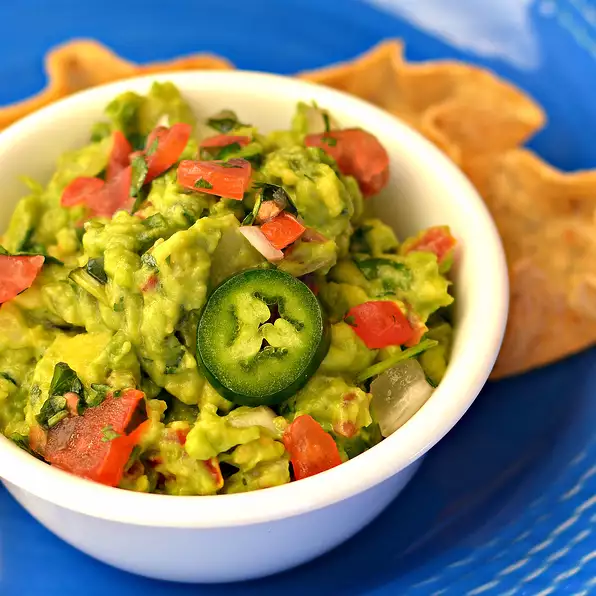

Back
Guacamole
Description:
A popular and very iconic dishes. Enjoy the delicious taste of latin America right in your home!

Ingredients:
- 2 Avocados
- 1 cup chopped tomatoes
- 1/4 cup chopped onion
- 1/4 cup chopped cilantro
- 2 tbsp lemon juice
- 1 seeded and minced jalapeno pepper
- Salt and pepper to taste
How to prepare the guacamole:
- Mash avocados in a bowl until creamy.
- Mix tomatoes, onion, cilantro, lemon juice, and jalapeño pepper into mashed avocado until well combined.
- Season with salt and pepper.